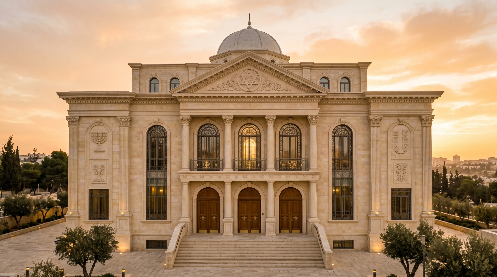
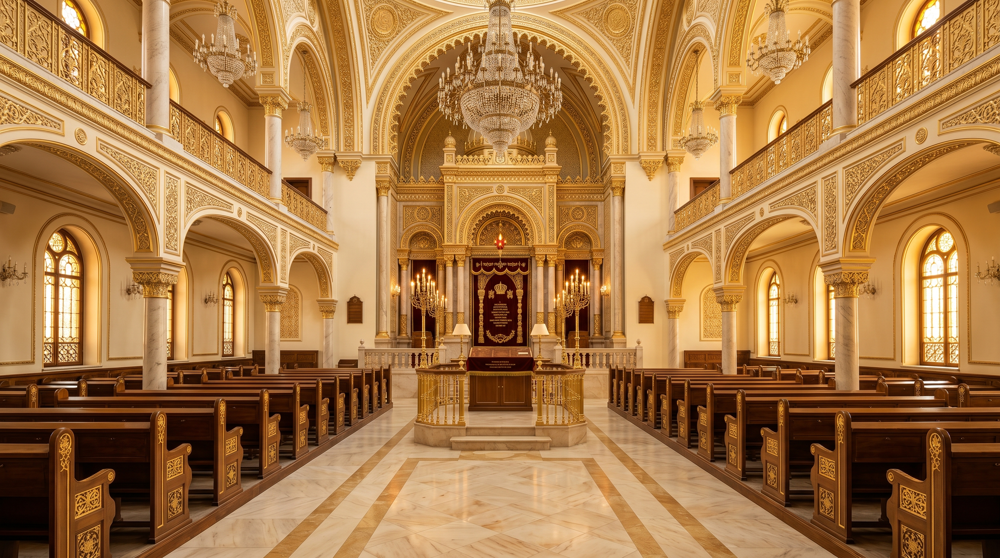
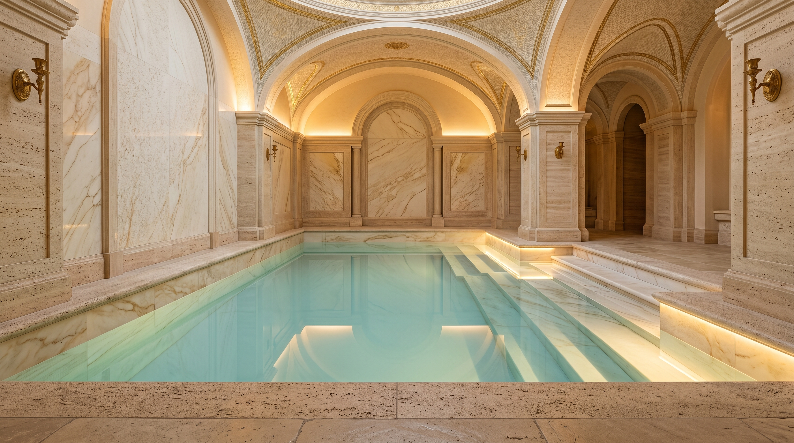
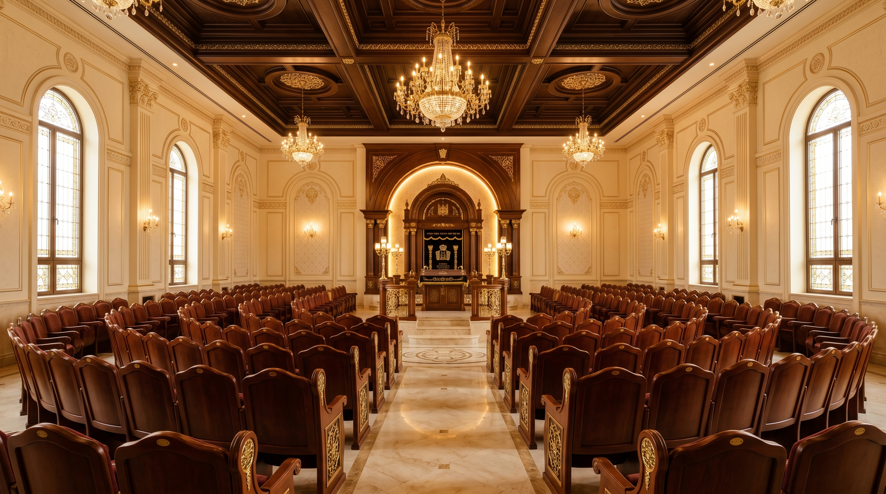

100₪
לחודש
למשך 48 חודשים
יד לכל אחד — הסכום שכל יהודי יכול להרים ולהיות שותף אמיתי בהרבצת התורה.
הצטרפות
מרכז תורה, תפילה וקהילה
"והמשכילים יזהירו כזוהר הרקיע, ומצדיקי הרבים ככוכבים לעולם ועד"
(דניאל י״ב)
שם היה לה — זוהרה. אור היה בה. חסד ותבונה לקהילה.
לע״נ הרבנית זהבית זוהרה בת אסתר לבית ברבי
בנשיאות הרב שלום יוסף ברבי שליט״א
ארגון חסד יסובבנו
מה שניטע היום — יניב פירות לאורך שנים.
פתח דבר: בלב הנגב, בעיר נתיבות — עיר שצדיקים חקוקים בעפרה, ושערי שמים פתוחים בה לעולם — חזון של תפילה, תורה וקהילה, קם בה.
בית של תורה. משכן של פאר והדר. קריה שלמה של תורה, תפילה וטהרה — אכסניה שתהא ראויה למלכות התורה, בעיצוב ארכיטקטוני שמעורר יראה ומושך את הלב.
מתחם 'כזוהר הרקיע' יבנה ב״ה בסטנדרט יוצא דופן, במטרה להעניק לתורה ולעובדי ה' את האכסניה המכובדת והמפוארת ביותר הראויה להם, וליצור מרכז רוחני שוקק חיים המאחד את הקהילה המגוונת והמיוחדת של העיר.
"בית שאין בו שעה ריקה מתורה — הוא בית שמחזיק את העולם. וכל אבן בו, כל שורה של אבנים, נחשבת כאילו בנאה התורם עצמו."

"מי שנוטל חלק בבניית קריית התורה — נוטל חלק בעולם הבא. שיזכה כל אחד ואחת מכם לראות בבניין בית המקדש במהרה בימינו, ולזכות לכל הברכות והישועות."
✦ הרב שלום יוסף ברבי שליט״א, נשיא ארגון חסד יסובבנו ✦
הערה: החלף את קובץ ההקלטה בכתובת /audio/rabbi-blessing.mp3
בנוסף — שיעורי תורה לקהל הרחב ע״י כבוד הרב ברבי שליט״א ורבנים נוספים
היכל מרכזי בעיצוב ארכיטקטוני יוצא דופן — אולם שהצועדים בו נאלמים דום, והתפילה עולה אל גנזי מרומים.
שחרית מוקדמת, ותיקין, נץ החמה, שטיבלאך, מנחה ומעריב — בכל שעה מתקיים מניין, לכל יהודי יש בית.
עדות וקהילות, צעיר ומבוגר, שומר גחלת ומתקרב — כולם מסתופפים תחת קורה אחת.
בית מדרש שגם בשעת חצות שומעים בו קול של גמרא והלכה. הנר לא כבה, הקול לא נדם.
כולל הלכה, כולל ערב, כולל חצות, כולל שישי, כולל בין הזמנים — ואבות ובנים לחנך את הדור הבא.
מקווה שטובלים בו בשמחה. הידור בכל פרט: מים, אבנים, אוויר, אור. טהרה מתחילה בכבוד.
"חסד יסובבנו" — לא רק שם. סל מזון למשפחות, סיוע לאלמנות ויתומים, ומעטפת לכל מי שנזקק.
אבות ובנים, לימוד לנוער, משמרות שבת לילדים — כי האדם הוא עץ השדה.



סובבו · התקרבו · לחצו על מבנה כדי לגלות פרטים • חוויה תלת־מימדית מלאה של קריית התורה
כל שלב בבנייה — עוד צעד לקראת החלום
זו השעה: הקרקע נרכשה, התכניות אושרו, החפירות החלו, האבנים ממתינות. מה שמפריד בין החזון למציאות — הוא רק שותפים ושותפות שיקומו ויאמרו "אני בפנים".
בכל דור קמים בונים. בכל דור קמים כמה מיוחדים ומיוחדות שמחליטים — שלא יעבור הזמן מבלי שיטלו חלק במפעל עולמי נצחי. השותפות הזו אינה תרומה שנשכחת — היא השקעה בעולם הבא.
כל המעמיד תלמיד חכם אחד — זכותו עומדת לעולם. כל המעמיד בית של תלמידי חכמים — זכותו נמשכת ומשפיעה על כל אהוביו ומשפחתו.
"כל שותפות — חקוקה לדורות בלוח הזהב של בית המדרש"
שם השותף ושם יקיריו לעילוי נשמתם — נחקקים לדור ודור.
"שמות השותפים חקוקים לדורות — נזכרים מדי יום בפי לומדי המקום"
שותפי הקמת קריית התורה "כזוהר הרקיע"
יד לכל אחד — הסכום שכל יהודי יכול להרים ולהיות שותף אמיתי בהרבצת התורה.
הצטרפות180 = עשר פעמים חי. שותפות המכפילה חיים — לעצמכם, ליקיריכם, ולכלל ישראל.
הצטרפותשותף בכל יום מימות השנה — 360, כמספר ימות החמה. הזכרת שם קבועה בבית המדרש, שילוב בלוח השותפים, וברכת הרב שליט״א.
הצטרפותשותפות מורחבת לזכות בית שלם — הטבות מיוחדות, הזכרות מוגברות, ושילוב מכובד בלוח השותפים.
הצטרפות1,080 = 60 × חי. זכות של מחזיק ישיבה — שילוב מרכזי בלוח הזהב, הקדשת פינה בבית המדרש, וברכה אישית מהרב שליט״א.
הצטרפותזמינים כל שעות היום
תרומה מאובטחת דרך מערכת נדרים פלוס
לתרומה מקוונת ←קבלה על תרומה לפי סעיף 46 תישלח באוטומטי
יהי רצון שכל התורמים והתורמות, השותפים והשותפות, יזכו לכל הברכות והישועות ולראות בבניין בית המקדש במהרה בימינו, אמן
✦ כל פרטי התורמים והתורמות נשמרים בדיסקרטיות. תרומה בעילום שם — אפשרית ומכובדת. ✦